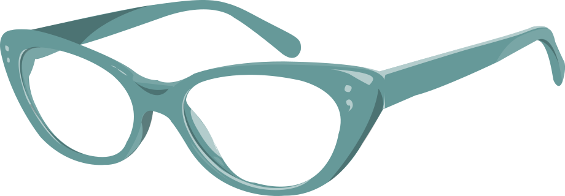

Sass is a powerful CSS extension language that is interpreted into CSS
Adds mechanics that are typically available in traditional programming languages
Designed by Hampton Catlin
Developed by Weizenbaum and Eppstein
First appeared in 2006
Current Release: Selective Steve (3.4.21)